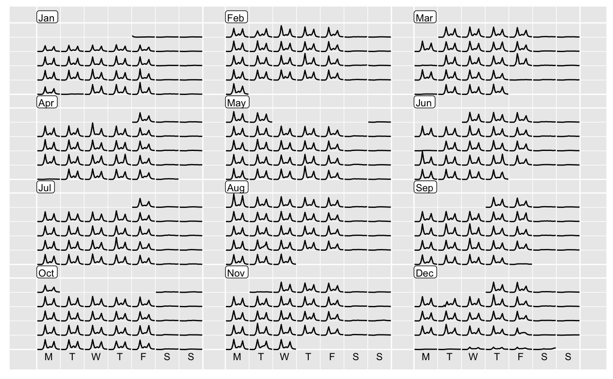
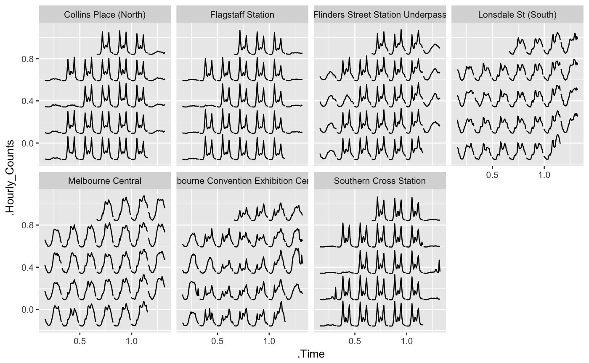

frame-calendar.RdTemporal data of daily intervals or higher frequency levels can be organised
into a calendar-based format, which is useful for visually presenting
calendar-related activities or multiple seasonality (such as time of day,
day of week, day of month). The function only returns a rearranged data frame,
and ggplot2 takes care of the plotting afterwards. It allows more
flexibility for users to visualise the data in various ways.
frame_calendar(data, x, y, date, calendar = "monthly", dir = "h", week_start = getOption("lubridate.week.start", 1), nrow = NULL, ncol = NULL, polar = FALSE, scale = "fixed", width = 0.95, height = 0.95, margin = NULL, sunday = FALSE) prettify(plot, label = c("label", "text"), locale, abbr = TRUE, ...)
| data | A data frame or a grouped data frame including a |
|---|---|
| x | A bare (or unquoted) variable mapping to x axis, for example time of day. If integer 1 is specified, it simply returns calendar grids on x without transformation. |
| y | A bare (or unquoted) variable or more mapping to y axis. More than
one variable need putting to |
| date | A |
| calendar | Type of calendar. (1) "monthly" calendar (the default) organises
the |
| dir | Direction of calendar: "h" for horizontal (the default) or "v" for vertical. |
| week_start | Day on which week starts following ISO conventions -
1 means Monday, 7 means Sunday (default). You can set |
| nrow, ncol | Number of rows and columns defined for "monthly" calendar
layout. If |
| polar | FALSE (the default) for Cartesian or TRUE for polar coordinates. |
| scale | "fixed" (the default) for fixed scale. "free" for scaling conditional on each daily cell, "free_wday" for scaling on weekdays, "free_mday" for scaling on day of month. |
| width, height | Numerics between 0 and 1 to specify the width/height for each glyph. |
| margin | Numerics of length two between 0 and 1 to specify the horizontal and vertical margins between month panels. |
| sunday | Deprecated and use |
| plot | A "ggplot" object or "plotly". |
| label | If "label" is specified, it will add month/week text on the
|
| locale | ISO 639 language code. The default is "en" (i.e. US English). For other languages support, package readr needs to be installed. See readr::locale for more details. |
| abbr | Logical to specify if the abbreviated version of label should be used. |
| ... | Extra arguments passed to |
A data frame or a dplyr::tibble with newly added columns of .x, .y. .x
and .y together give new coordinates computed for different types of
calendars. date groups the same dates in a chronological order, which is
useful for geom_line or geom_path. The basic use is ggplot(aes(x = .x, y = .y, group = date)) + geom_*. The variable names .x and .y reflect
the actual x and y with a prefix ..
The calendar-based graphic can be considered as small multiples
of sub-series arranged into many daily cells. For every multiple (or
facet), it requires the x variable mapped to be time of day and y to
value. New x and y are computed and named with a . prefixed to variable
according to x and y respectively, and get ready for ggplot2 aesthetic
mappings. In conjunction with group_by(), it allows the grouped variable
to have their individual scales. For more details, see vignette("frame-calendar", package = "sugrrants")
facet_calendar for a fully-fledged faceting calendar with formal labels and axes.
library(dplyr)#> #>#> #> #>#> #> #>#> #> #># compute the calendar layout for the data frame calendar_df <- pedestrian %>% filter(Sensor_ID == 13, Year == 2016) %>% frame_calendar(x = Time, y = Hourly_Counts, date = Date, nrow = 4) # ggplot p1 <- calendar_df %>% ggplot(aes(x = .Time, y = .Hourly_Counts, group = Date)) + geom_line() prettify(p1, size = 3, label.padding = unit(0.15, "lines"))# use in conjunction with group_by() grped_calendar <- pedestrian %>% filter(Year == "2017", Month == "March") %>% group_by(Sensor_Name) %>% frame_calendar(x = Time, y = Hourly_Counts, date = Date, sunday = TRUE) p2 <- grped_calendar %>% ggplot(aes(x = .Time, y = .Hourly_Counts, group = Date)) + geom_line() + facet_wrap(~ Sensor_Name, nrow = 2) prettify(p2)# NOT RUN { # allow for different languages # below gives simplied Chinese labels with STKaiti font family, # assuming this font installed in user's local system prettify(p2, locale = "zh", family = "STKaiti") # plotly example if (!requireNamespace("plotly", quietly = TRUE)) { stop("Please install the 'plotly' package to run these following examples.") } library(plotly) pp <- calendar_df %>% group_by(Date) %>% plot_ly(x = ~ .Time, y = ~ .Hourly_Counts) %>% add_lines(text = ~ paste("Count: ", Hourly_Counts, "<br> Time: ", Time)) prettify(pp) # }